DeepEP V1 通信机制全景深度解析（碎片恢复整合版）
本文根据
碎片文档.txt中残留的 Markdown 片段、问答、代码摘录和后续纠错记录恢复，并以当前工作区 DeepEP V1（Legacy）源码重新核对。核对版本：commit
f99f06868616c6fa96f83ff1caa5f0231f9ee3bc。重点覆盖：V1 normal（非 low-latency）的 channel、SM/block、warp、lane/thread 分工，跨节点 RDMA→NVLink 两级转发，四 meta、环形队列与 credit；同时完整补充 V1 low-latency、NVSHMEM、IBGDA、Python API、流程图和可改造 demo。
0. 恢复说明、阅读方法与重要纠正
0.1 这不是简单重写
碎片文档里保留下来的不是一篇完整文章，而是原文的多轮编辑轨迹：
- 原章节号和段落，例如“3.5 四 meta”“3.5.3 与配图上半部分的对应关系”；
- 逐行代码解释；
recv_buffer(2) + 5、channel 3 藏在哪里等具体追问；- 20 SM、10 channel、72 字节 meta 的数字示例；
- 后续对早期错误的纠正，例如整个 RDMA buffer 都来自对称堆；
- 原文常用的“关键澄清”“★”“一句话总结”和 ASCII 图。
本文尽量保留这种风格，但把分散片段按完整通信链重排。凡是碎片前后矛盾的地方，以当前源码为准。
0.2 本文中的三个标记
| 标记 | 含义 |
|---|---|
| [碎片恢复] | 内容和例子来自碎片文档原有段落 |
| [源码补全] | 碎片中缺失，但可由当前 V1 源码直接确认 |
| [关键纠正] | 旧片段中的说法后来被推翻，或需要更严谨地表述 |
0.3 最重要的六个纠正
- IBGDA 不等于 low-latency。 V1 normal 跨节点 kernel 也直接调用 IBGDA API；normal/LL 是两套上层协议。
- 源码变量
sm_id实际取自blockIdx.x。 “20 SM”是通常的一 block 驻留一 SM 的资源模型，不是 CUDA 提供了固定物理 SM 编号。 - normal dispatch 是偶数 block Forward，奇数 block Sender+Receiver。 combine 另有一套角色和相反的奇偶映射，不可混用。
- SEND/RECV 之间的“0 SM”只描述网络在飞期间没有常驻通信 kernel。 SEND 和 RECV phase 本身仍运行 CUDA kernel、占用 SM。
- 72 字节 meta 是一次逻辑 RDMA put 的长度，不应笼统称为“72 字节原子到达”。 可见性和顺序要按 WQE、QP、fence、tail 发布协议理解。
- send/recv 不是同一物理地址。 它们是每个 PE 对称堆中相同布局的不同逻辑分区；远端 put 由“远端 PE + 对称地址/偏移 + rkey”定位到远端物理显存。
0.4 推荐阅读路线
如果你是新手，建议按下面顺序：
第 1～3 章：先懂 MoE、两级拓扑、normal 与 LL
↓
第 4～10 章：重点理解 normal 的 channel、SM、warp、lane、meta 和完整案例
↓
第 11 章：再看 combine 为什么不是 dispatch 简单倒放
↓
第 12～13 章：理解 low-latency 与 IBGDA/NVSHMEM
↓
第 14～17 章：API、demo、调试和 FAQ1. DeepEP 到底在解决什么问题
1.1 MoE 中的 Dispatch 与 Combine
设每张 GPU 上有一批 token：
x : [num_tokens, hidden]
topk_idx : [num_tokens, num_topk]
topk_weight: [num_tokens, num_topk]门控网络为每个 token 选择若干 expert。expert 分布在不同 GPU，甚至不同节点，因此需要两次 all-to-all 风格的数据重排：
原 token 所在 GPU
│
├── Dispatch：按 top-k expert 把 token 发到 expert 所在 GPU
│
▼
各 GPU 的 local experts 做 grouped GEMM
│
├── Combine：把 expert 输出送回 token 原始 GPU并按权重规约
│
▼
原 token 顺序的输出Dispatch 不是简单复制一次。一个 token 如果 top-k expert 位于多个 rank，逻辑上会有多个目的地；但 DeepEP 会尽量让跨节点 payload 只发一份，再在目标节点内部 fan-out，从而减少 IB 流量。
1.2 V1 有两条不同的通信路径
| 项目 | V1 normal / SM | V1 low-latency |
|---|---|---|
| 主要场景 | 训练、prefill、大 token 批量 | decode、小批量、追求端到端时延 |
| 跨节点拓扑 | RDMA 到同号 GPU，再 NVLink 转发 | 所有可见 rank 间直接 RDMA |
| buffer | 动态 prefix + 有界 ring queue | 固定 expert-major 容量 + ping-pong |
| 通信 kernel | 常驻一段时间，显式占 num_sms |
SEND 与 RECV 可拆开，中间让网络后台飞 |
| normal 五种 warp 角色 | 有 | 没有 |
return_recv_hook |
无 | 有 |
| 代价 | 协议复杂，但吞吐高、显存更节省 | 固定预留更耗显存，适合小消息低时延 |
一句话总结：normal 追求“让很多 token 持续流过多条 channel”；LL 追求“尽快 issue，释放计算资源，稍后再 receive”。
1.3 “用了 IBGDA”为什么不代表 LL
normal 的 SenderCoordinator、head/tail 更新也会调用：
nvshmemi_ibgda_put_nbi_warp(...);
nvshmemi_ibgda_amo_nonfetch_add(...);这只说明底层传输由 GPU 直接构造 RDMA WQE。normal 仍然有：
- channel；
- RDMA ring buffer；
- Forwarder；
- NVLink queue；
- Coordinator；
- 四 meta；
- 持续轮询和 credit。
LL 则是 internode_ll.cu 中另一套固定布局协议。
2. 代码地图：从 Python 到 CUDA kernel
| 层次 | 文件 | 重点 |
|---|---|---|
| Python V1 API | deep_ep/buffers/legacy.py |
Buffer、layout、dispatch、combine、LL API |
| normal 跨节点 | csrc/kernels/legacy/internode.cu |
五种 dispatch warp 角色、combine、ring queue |
| normal 单节点 | csrc/kernels/legacy/intranode.cu |
纯 NVLink/IPC dispatch 与 combine |
| LL 跨 rank | csrc/kernels/legacy/internode_ll.cu |
固定布局、SEND/RECV、FP8、LogFMT |
| buffer 布局 | csrc/kernels/legacy/buffer.cuh |
SymBuffer、AsymBuffer |
| IBGDA device | csrc/kernels/legacy/ibgda_device.cuh |
lkey/rkey、WQE、doorbell、AMO |
| 通用工具 | csrc/kernels/legacy/utils.cuh |
get_channel_task_range 等 |
| 官方 normal 文档 | docs/implementation-v1-sm.md |
V1 SM 方案说明 |
| 官方 LL 文档 | docs/implementation-v1-low-latency.md |
V1 LL 说明 |
| 官方 Legacy 示例 | docs/legacy.md |
安装、配置、Python 示例 |
| 测试 | tests/legacy/test_internode.py |
normal 多节点正确性/性能 |
| LL 测试 | tests/legacy/test_low_latency.py |
hook、FP8、zero-copy、shrink |
典型 normal 调用链：

查看 Mermaid 图源码
flowchart TD
P[Python Buffer.get_dispatch_layout] --> L[layout.cu / notify]
L --> PX[prefix matrices + is_token_in_rank]
PX --> D[Python Buffer.dispatch]
D --> C[C++ runtime launch]
C --> K[internode.cu dispatch kernel]
K --> R[RDMA ring]
R --> N[NVLink queue]
N --> O[recv_x / metadata / handle]3. Rank 与两级拓扑：先把“同号 GPU 中转”想清楚
3.1 normal 中的 rank 分解
V1 normal 的跨节点实现固定按最多 8 个 NVLink peer 建模：
rdma_rank = rank / LEGACY_NUM_MAX_NVL_PEERS;
nvl_rank = rank % LEGACY_NUM_MAX_NVL_PEERS;在“每节点 8 GPU”的常见部署里：
global rank = node_id * 8 + local_gpu_id
rdma_rank = node_id
nvl_rank = local_gpu_id例如：
| global rank | node | local GPU / nvl rank |
|---|---|---|
| 5 | 0 | 5 |
| 11 | 1 | 3 |
| 13 | 1 | 5 |
3.2 为什么源 GPU5 先到目标节点 GPU5
假设 Node0 GPU5 的 token 要去 Node1 GPU3 的 expert。normal 的跨节点路径不是直接 RDMA 到 GPU3，而是：
Node0 GPU5
│ RDMA，保持 nvl_rank=5
▼
Node1 GPU5 ← 同号 GPU，充当 scale-out/scale-up 边界点
│ NVLink / IPC
▼
Node1 GPU3对应全局 rank：
rank 5 --RDMA--> rank 13 --NVLink--> rank 11这样做的价值：
- 同一源 token 如果在 Node1 上命中 GPU3、GPU6 两个 expert，跨节点 payload 可只到 Node1 GPU5 一次；
- 到达后由
SourceMeta位图决定在 Node1 内 fan-out 到 GPU3、GPU6； - 每个 GPU 的 NIC/QP 和节点内 NVLink 转发职责稳定映射，便于构造多 channel 流水线。
3.3 LL 为什么不需要 Forwarder
LL 要求参与的 rank 都能通过 RDMA 直接可见。它为每个本地 expert、每个来源 rank预留固定槽位，因此可以：
源 rank --IBGDA put--> 目标 expert rank 的固定槽位没有 normal 的“目标节点同号 GPU → 目标 GPU”第二跳，自然也没有 normal 的五种 warp 角色。
4. NVSHMEM 对称内存、SymBuffer 与 send/recv
4.1 “对称”不等于所有 GPU 共用一块物理显存
每个 PE 都有自己的物理显存。对称分配保证的是：
- 每个 PE 按相同顺序分配相同大小的对象；
- 对象在对称堆中的偏移和远端寻址规则一致；
- NVSHMEM/IBGDA 可以由“对称地址 + 目标 PE”推导远端地址和 rkey。
因此更准确的图是：
PE 0 physical HBM PE 1 physical HBM
┌────────────────────┐ ┌────────────────────┐
│ symmetric heap │ │ symmetric heap │
│ offset X: object A │ │ offset X: object A │
└────────────────────┘ └────────────────────┘
不同物理内存 不同物理内存
相同对称布局 相同对称布局不要把它理解为 CPU 多进程映射同一页物理共享内存。
4.2 SymBuffer 怎样划分 channel、send 与 recv
源码核心位于 buffer.cuh：
template <typename dtype_t, bool kDecoupled = true>
struct SymBuffer {
SymBuffer(void*& gbl_ptr,
int num_elems, int num_ranks,
int sm_id = 0, int num_sms = 1) {
num_bytes = num_elems * sizeof(dtype_t);
int64_t per_channel_bytes = num_bytes * num_ranks;
total_bytes = per_channel_bytes * num_sms *
(static_cast<int>(kDecoupled) + 1);
send_ptr = static_cast<uint8_t*>(gbl_ptr)
+ per_channel_bytes * sm_id;
recv_ptr = static_cast<uint8_t*>(gbl_ptr)
+ per_channel_bytes * (sm_id + num_sms);
gbl_ptr = static_cast<uint8_t*>(gbl_ptr) + total_bytes;
}
};这里参数名仍叫 sm_id/num_sms，在 normal dispatch 的调用处传入的其实是 channel_id/num_channels。
若 kDecoupled=true，整个逻辑布局是：
[ch0 send][ch1 send]...[chC-1 send]
[ch0 recv][ch1 recv]...[chC-1 recv]每个 channel 段内部再按 rank slot 排列：
channel c send: [to rank0][to rank1]...[to rankR-1]
channel c recv: [from rank0][from rank1]...[from rankR-1]4.3 channel 3 为什么没出现在 recv_buffer(2)[5] 中
[碎片恢复：原文反复追问的核心问题]
假设：
num_channels = 10；- 每个 rank 的 meta slot 为 18 个
int，即 72 字节； - 现在运行的是 channel 3；
- Forwarder 读取来源节点 2、目标 GPU5 的 meta。
构造时已经计算：
per_channel_bytes = 72 * num_rdma_ranks
recv_ptr = base + per_channel_bytes * (3 + 10)之后：
rdma_channel_meta.recv_buffer(2) + 5三个维度分别是：
| 维度 | 在哪里体现 | 含义 |
|---|---|---|
| channel 3 | 已烤进 recv_ptr |
选择 channel 3 的 recv 大段 |
recv_buffer(2) |
函数参数 | 选择“来自 rdma rank 2”的 72B slot |
+ 5 |
slot 内偏移 | 选择目标 NVLink rank/GPU5 的 start meta |
一句话：channel 不在最后的数组下标里，因为它早在
SymBuffer(..., channel_id, num_channels)构造时就变成了基指针偏移。
4.4 send/recv 为什么要分成两段
同一个节点会同时：
我发给节点 k：本地写 outgoing 数据
节点 k 发给我：远端 put 写 incoming 数据如果只有一段并按 rank k 索引，两种方向可能撞同一槽位。分段后：
我发给 k → send_buffer(k)
k 发给我 → recv_buffer(k)生产者/消费者关系：
| 区域 | 谁写 | 谁读 |
|---|---|---|
| 本 PE send | 本地 Sender/Coordinator | 本机 NIC 作为 RDMA 源 DMA 读 |
| 本 PE recv | 远端 NIC put | 本地 Forwarder/Receiver |
4.5 为什么 send 区也在对称堆
[关键纠正] 不是因为远端代码需要直接读本 PE 的 send 区，而是当前 IBGDA fast path 需要为本地源地址取得 lkey。
逻辑链：
send_buffer local address
│
├─ ibgda_get_lkey_and_rkey(laddr, ...)
│ 通过 laddr - heap_base 查注册 key 表
▼
WQE data segment = {local address, lkey, byte_count}
│
▼
NIC 使用 lkey DMA 读 GPU 源显存理论上，另行注册的非对称 GPU 内存也可以成为 GPUDirect RDMA 源；但那需要独立的注册和 key 查找路径。DeepEP V1 当前 fast path 直接依赖 NVSHMEM 对称堆的 key 表，因此不能把 send_buffer 随意换成普通 cudaMalloc 指针。
4.6 head/tail 为什么可以 kDecoupled=false
SymBuffer<T, false> 只有一段 buffer()：
tail：发送方发布，接收方读取
head：接收方归还 credit，发送方读取同一个计数器方向固定，不需要同时存 outgoing payload 与 incoming payload，因此无需为 head/tail 再做 send/recv 双份布局。
5. Normal Dispatch 的 layout：通信之前先算什么
5.1 get_dispatch_layout 输出
Python API：
num_tokens_per_rank,
num_tokens_per_rdma_rank,
num_tokens_per_expert,
is_token_in_rank,
event = buffer.get_dispatch_layout(topk_idx, num_experts, ...)它回答四类问题：
| 张量 | 回答的问题 |
|---|---|
num_tokens_per_rank |
每个最终 GPU rank 接收多少 token |
num_tokens_per_rdma_rank |
每个目标节点接收多少去重后的 token |
num_tokens_per_expert |
每个 expert 有多少 token |
is_token_in_rank[t, r] |
token t 是否命中 rank r 上至少一个 expert |
5.2 为什么还需要 prefix matrix
normal 不是先把全部 token 排好再统一发送，而是多 channel、多个来源并行推进。为了让接收端不做全局原子抢位置，需要预先知道每一段在最终输出中的连续区间：
channel prefix：这个 channel 结束时累计有多少
rank prefix ：前面的来源 rank 累计有多少因此最终位置通常可以由几个 prefix 加局部序号直接计算。
5.3 prefix 的层级
可把 normal dispatch 的索引理解为四层：
目标 GPU / expert
└─ 来源 rdma rank（节点）
└─ channel
└─ channel 内序号四 meta 正是把其中关键的起止 prefix 从 Sender 传给 Forwarder。
6. Channel：一张卡上的不同 channel 到底怎样划 token
6.1 channel 数量来自 num_sms / 2
dispatch kernel 的关键代码：
const auto num_sms = static_cast<int>(gridDim.x);
const auto sm_id = static_cast<int>(blockIdx.x);
const auto num_channels = num_sms / 2;
const auto channel_id = sm_id / 2;
const bool is_forwarder = sm_id % 2 == 0;所以：
num_sms = 20 → num_channels = 10
channel 0 = block 0 + block 1
channel 1 = block 2 + block 3
...
channel 9 = block 18 + block 19★ “20 SM、10 channel”是 DeepSeek-V3 论文和常见 V1 配置中的典型值。代码本质公式是 C = num_sms / 2，配置改变时数字也会改变。
6.2 token 按连续区间分给 channel
源码 utils.cuh：
void get_channel_task_range(int num_tokens,
int num_channels,
int channel_id,
int& start,
int& end) {
int per = ceil_div(num_tokens, num_channels);
start = min(per * channel_id, num_tokens);
end = min(start + per, num_tokens);
}设 T=103、C=10，则 ceil_div(103,10)=11：
| channel | token 区间 |
|---|---|
| 0 | [0, 11) |
| 1 | [11, 22) |
| 2 | [22, 33) |
| … | … |
| 8 | [88, 99) |
| 9 | [99, 103) |
因此答案是：一张卡的不同 channel 一般处理不同的本地 token 连续子区间。
6.3 channel 不按目的节点或目的 GPU划分
一个常见误解：
错误：channel 0 专门发 Node0，channel 1 专门发 Node1
错误：channel 3 专门负责 GPU3实际是：
channel c 先取得一段 token index
│
└─ 对这段内每个 token，再看它命中哪些目标节点/GPU所以每个 channel 都有完整功能：
- 可以发往所有目标 RDMA rank；
- 可以接收所有来源 RDMA rank；
- 可以转发到 8 个本地 NVL rank；
- 可以从 8 个本地 Forward GPU 的 NVLink queue 接收。
6.4 top-k fan-out 不会让一个 token 属于多个 channel
channel 由本地 token_idx 决定。一旦 token t 落在 channel 3，它的所有 top-k 路由都由 channel 3 处理：
token 37 → channel 3
├─ expert on Node1 GPU3
├─ expert on Node1 GPU6
└─ expert on Node2 GPU2它可以产生多个目的地，但不会因为多个目的地而重新分到 channel 4/5。
6.5 channel 内再由 7 个 Sender warp 分片
对常见 kNumDispatchRDMASenderWarps=7：
if ((token_idx - token_start_idx) % 7 != warp_id)
continue;即：
channel 内 offset 0,7,14,... → Sender warp 0
channel 内 offset 1,8,15,... → Sender warp 1
...
channel 内 offset 6,13,20,...→ Sender warp 6两层切分：
全部本地 token
└─ 第一层：按连续区间分给 channel
└─ 第二层：channel 内按 offset % 7 分给 Sender warp6.6 每个节点下每张卡都有很多 channel 吗
是。每个参与 normal kernel 的 GPU 都 launch 自己的 grid，因此每张 GPU 都有 C 个逻辑 channel。
但“GPU0 的 channel3”和“GPU5 的 channel3”不是一支共享 CUDA 执行单元，它们是各 GPU 上布局与 QP 编号一致的本地流水线：
Node0 GPU0: ch0..ch9
Node0 GPU1: ch0..ch9
...
Node0 GPU7: ch0..ch9
Node1 GPU0: ch0..ch9
...
Node1 GPU7: ch0..ch9同号 channel 跨边界对应的原因：
- 两端
SymBuffer都用同一个channel_id算偏移； - IBGDA put 选择相应 channel/QP；
- Forwarder 把 channel c 的 RDMA 数据写进目标 GPU 的 channel c NVL queue；
- 目标 GPU 的 channel c Receiver 消费。
一句话总结：channel 是端到端的平行流水线编号，不是 token 的目的地编号。
7. Normal Dispatch：两个 block、五种 warp 角色、lane 分工
7.1 先纠正“SM”的叫法
代码：
sm_id = blockIdx.x;后文沿用项目语境称“SM0/SM1”，但更精确地应读成“block0/block1；在 launch bounds 与资源占用约束下通常各自驻留一个 SM”。不要把 sm_id=6 理解成 CUDA 保证跑在物理编号为 6 的 SM。
7.2 每个 channel 的两个 block
| block | 奇偶 | dispatch 职责 |
|---|---|---|
2*c |
偶数 | Forward block：RDMA recv → NVLink forward |
2*c+1 |
奇数 | S/R block：本地 RDMA send + NVLink receive |
典型 20 block：
GPU 上的 normal dispatch
├─ ch0: block0 Forward + block1 Sender/Receiver
├─ ch1: block2 Forward + block3 Sender/Receiver
├─ ...
└─ ch9: block18 Forward + block19 Sender/Receiver7.3 五种角色总表
dispatch 定义：
enum class WarpRole {
kRDMASender,
kRDMASenderCoordinator,
kRDMAAndNVLForwarder,
kForwarderCoordinator,
kNVLReceivers
};常见 16 warp/block 映射：
| block | warp | 角色 | 数量 | 主要方向 |
|---|---|---|---|---|
| 偶数 Forward | 0～7 | kRDMAAndNVLForwarder |
8 | RDMA recv → 某个目标 GPU 的 NVL queue |
| 偶数 Forward | 8 | 有效 kForwarderCoordinator |
1 | 汇总 8 个 Forwarder 进度、归还 RDMA credit |
| 偶数 Forward | 9～15 | extra coordinator | 7 | target_rank > 0，直接 return |
| 奇数 S/R | 0～6 | kRDMASender |
7 | 本地 token → RDMA send ring |
| 奇数 S/R | 7 | kRDMASenderCoordinator |
1 | 合并连续完成区间、issue put、发布 tail |
| 奇数 S/R | 8～15 | kNVLReceivers |
8 | 消费来自 8 个本地 Forward GPU 的 NVL queue |
7.4 Forward warp 怎样对应目标 GPU
源码：
target_rank = (warp_id + channel_id) % 8;channel 3 的 Forward block：
| warp | 目标 nvl rank |
|---|---|
| 0 | 3 |
| 1 | 4 |
| 2 | 5 |
| 3 | 6 |
| 4 | 7 |
| 5 | 0 |
| 6 | 1 |
| 7 | 2 |
循环移位的作用是让不同 channel 的 warp 编号与目标 GPU 关系打散，减轻完全相同的访问相位。
7.5 NVLReceiver warp 怎样对应来源 Forward GPU
奇数 S/R block：
source_nvl_rank =
(warp_id + channel_id - kNumDispatchRDMASenderWarps) % 8;当 channel 3、Sender warp 数为 7：
| warp | 来源 nvl rank |
|---|---|
| 8 | 4 |
| 9 | 5 |
| 10 | 6 |
| 11 | 7 |
| 12 | 0 |
| 13 | 1 |
| 14 | 2 |
| 15 | 3 |
因此在 Node1 GPU3 上，channel3 的 warp9 正好负责消费“由 Node1 GPU5 Forward 写来的 queue”。
7.6 kRDMASender 内的 32 lane 做什么
阶段 A：写 18 个 meta
一个 warp 合作构造目标节点的 18 个 int：
lane 0..7 → 8 个目标 GPU 的 channel start prefix
lane 8..15 → 8 个目标 GPU 的 channel end prefix
lane 16 → 本 channel 在该目标节点的 node-level start prefix
lane 17 → 本 channel 在该目标节点的 node-level end prefix
lane 18..31 → 该阶段无 meta 写入每 lane 写一个 int，所以无需单线程串行写 18 个字段。
阶段 B：每 lane 代表一个目标 RDMA rank
在 token 循环里，若 kNumRDMARanks <= 32：
lane j 加载 token 是否命中目标节点 j 的 8-bit GPU mask
lane j 维护该目标节点的 logical tail
lane j 检查目标节点 j 的 remote head / credit注意：lane 的语义随代码阶段变化。不要把 lane5 永久记成 GPU5；meta 阶段 lane5 是目标 GPU5 的一个字段，payload 阶段 lane5 可能代表目标节点5。
阶段 C：整个 warp 搬一条 token message
确定某个目标节点需要该 token 后，32 lane 协作复制：
hidden
+ FP8 scales（可选）
+ SourceMeta
+ topk_idx
+ topk_weightsSourceMeta：
struct SourceMeta {
int src_rdma_rank;
int is_token_in_nvl_rank_bits;
};第二个 int 是 8-bit 目标 GPU 位图，使目标节点只接收一份跨节点 payload，再按位图 NVLink fan-out。
7.7 kRDMASenderCoordinator 内的 lane 分工
warp7 不重新遍历 token payload。它主要：
- 观察 7 个 Sender warp 的完成窗口；
- 找到可以连续提交的 tail；
- lane j 对应目标 RDMA rank j 的控制状态；
- 合作发起
nvshmemi_ibgda_put_nbi_warp； - 在 payload 对远端可见的发布协议之后推进远端 tail。
为什么需要 coordinator：如果 7 个 Sender warp 完成顺序是 0,2,1,4,3，消费者只能安全看到连续前缀。Coordinator 把乱序完成压缩为单调连续进度。
7.8 kRDMAAndNVLForwarder 内的 lane 分工
一个 Forward warp 固定一个 dst_nvl_rank，例如 channel3 warp0 固定目标 GPU3。
meta 轮询阶段：
lane j → 来源 rdma rank j每个有效 lane j 轮询：
meta_0 = recv_buffer(j)[dst_nvl_rank];
meta_1 = recv_buffer(j)[8 + dst_nvl_rank];
meta_2 = recv_buffer(j)[16];
meta_3 = recv_buffer(j)[17];得到：
- 来源节点 j 在本 channel 有多少 token；
- 其中多少要去当前固定目标 GPU；
- 它们写最终输出时的 prefix；
- RDMA queue 应从哪个逻辑位置开始读。
payload 阶段中，warp 用 SourceMeta 的目标位判断本 token 是否要转发给当前 GPU；需要时通过 TMA/warp 协作写目标 GPU 的 NVLink queue。
7.9 kForwarderCoordinator 内的 lane 分工
只有 Forward block warp8 有效；warp9～15 在分支开头直接退出：
if (target_rank > 0)
return;有效 Coordinator：
lane j → 来源 rdma rank j它读取 8 个目标 GPU Forward warp 对来源 j 的消费 head，并取仍活跃消费者中的最小值：
GPU0 forward consumed 100
GPU1 forward consumed 104
GPU2 forward consumed 98
...
安全可归还 head = min(...) = 98为什么必须取最小值：RDMA ring 中同一条源消息可能还要被多个目标 GPU 的 Forward warp检查。只有所有相关消费者都越过该位置，发送端才能复用槽位。
7.10 kNVLReceivers 内的 lane 分工
一个 NVLReceiver warp 固定一个来源 Forward GPU。它：
- 从对应 NVL prefix 获取各来源 rdma rank 的起止范围；
- 轮询该 NVLink queue 的 tail；
- 32 lane 协作搬 hidden/scales/top-k；
- 根据 prefix 与局部序号写最终
recv_x、recv_src_meta； - 消费后推进 head，归还 NVLink queue credit。
★ kNVLReceivers 读的是 NVLink/IPC queue，不是 RDMA recv_buffer。RDMA recv_buffer 由偶数 Forward block 消费。
7.11 Channel 3 的完整 warp 表
channel 3
├─ block 6（偶数，Forward）
│ ├─ warp0..7 → dst GPU 3,4,5,6,7,0,1,2
│ ├─ warp8 → 有效 ForwarderCoordinator
│ └─ warp9..15→ return
│
└─ block 7（奇数，Sender/Receiver）
├─ warp0..6 → 7 个 RDMASender，按 offset%7 分 token
├─ warp7 → RDMASenderCoordinator
└─ warp8..15→ 从 Forward GPU 4,5,6,7,0,1,2,3 接收8. 四 meta：72 字节“数据目录”的完整生命周期
8.1 18-int 布局
LEGACY_NUM_MAX_NVL_PEERS=8：
int meta[18] = 72 bytes
meta[0..7] : 每个目标 GPU 的 channel start prefix
meta[8..15] : 每个目标 GPU 的 channel end prefix
meta[16] : 本 channel 对目标节点的 start prefix
meta[17] : 本 channel 对目标节点的 end prefix对一个固定 Forward warp（固定目标 GPU d），它只取四个值：
meta_0 = meta[d]
meta_1 = meta[8+d]
meta_2 = meta[16]
meta_3 = meta[17]所以“四 meta”不是网络只传 4 个 int，而是 72B 目录中，每个 Forward warp读取与自己有关的四个字段。
8.2 为什么编码为 -value-1
初始化的 meta 通常是非负/零状态，而发布后的合法 prefix 可能为 0。若直接写 -value：
value=0 → encoded=0无法区分“未到”与“合法零”。使用：
encoded = -value - 1
decoded = -encoded - 1则：
0 → -1
1 → -2
100 → -101Forwarder 只要看到四项都 <0，就知道目录已发布。
8.3 数字例子：来源节点2、channel3、目标 GPU5
假设 prefix：
目标 GPU5：
channel0 累计结束 40
channel1 累计结束 70
channel2 累计结束 100
channel3 累计结束 130
目标节点整体：
channel2 累计结束 800
channel3 累计结束 1000channel3 写入：
meta_0 = -(100)-1 = -101 → GPU5 start
meta_1 = -(130)-1 = -131 → GPU5 end
meta_2 = -(800)-1 = -801 → node start
meta_3 = -(1000)-1 = -1001 → node endForwarder 解码：
GPU5 应转发数量 = 130 - 100 = 30
本 channel RDMA 消息数 = 1000 - 800 = 200这意味着它需要扫描 200 条到达 Node 的去重消息，其中只把命中 GPU5 位图的 30 条写到 GPU5 NVL queue。
8.4 Sender 写、远端 Forwarder 读
发送端远程目标地址使用：
rdma_channel_meta.recv_buffer(rdma_rank)这里下标是发送方自己的 rdma rank，因为接收端的 recv slot 是“from source rank”。本地源地址使用：
rdma_channel_meta.send_buffer(dst_rdma_rank)完整语义：
源节点 S：send_buffer(D) 里准备“发给 D”的 72B
│
│ put(remote recv_buffer(S), dst_pe=D的同号GPU)
▼
目标节点 D：recv_buffer(S) 里看到“来自 S”的 72Bsend 下标和 recv 下标不相等也完全正常：一个是“to D”，一个是“from S”。
8.5 channel 如何在两端对应
发送端 channel3：
local src = ch3 send region, slot D
remote dst= ch3 recv region, slot S
QP/channel id = 3
接收端 channel3：
Forward block6 构造 ch3 recv_ptr
读取 slot S没有显式把数字 3 写进 payload；channel3 由指针偏移、QP 选择和两端 block 映射共同保持。
8.6 72B 是否“一次原子到达”
[关键纠正] 不能笼统这样保证。
准确说法：
- 上层代码发起一次长度为 72B 的逻辑
put_nbi_warp； - IBGDA 可能根据注册 chunk、WQE 限制等拆分底层工作请求；
- 普通 RDMA write 对任意 72B 不提供“接收 GPU 只可能看到全旧或全新”的通用事务原子性承诺；
- 正确性依赖本实现的写入/发布顺序、QP ordering、system-scope load/store、tail/flag 等协议；
- 不能把“同一 QP 有序”扩展成“任意跨 QP、任意字段天然原子”。
8.7 meta 到了是否代表 token 全部到了
不代表。meta 是目录，payload 的实际可消费进度由 ring tail/发布协议决定：
meta ready → 我知道预计范围和地址
tail advance→ 对应 payload 已按协议发布，可开始消费把 meta 当作“数据全部到齐”会绕过 queue 的安全边界。
9. 完整案例：Node0 GPU5 → Node1 GPU5 → Node1 GPU3
这是理解“边界点 GPU5 的 Forward 怎样和 Node1 各卡 SendReceive SM 交互”的核心案例。
9.1 假设
每节点 8 GPU
num_sms=20 → 10 channels
源：Node0 GPU5，global rank 5，rdma rank 0，nvl rank 5
目标 expert：Node1 GPU3，global rank 11，rdma rank 1，nvl rank 3
目标节点边界点：Node1 GPU5，global rank 13
token t 位于源 GPU 本地 channel3 的 token 区间9.2 第一步：layout 决定路由与 prefix
is_token_in_rank[t, rank11]=true，因此对目标 rdma rank1 的 8-bit mask 中 GPU3 位为 1：
is_token_in_nvl_rank_bits = 00001000b若 token 同时命中 Node1 GPU6，则位图为：
01001000b跨节点 payload 仍只需发到 Node1 一次。
9.3 第二步：Node0 GPU5 channel3 的 Sender 写 RDMA ring
channel3 对应 S/R block7。token 在 channel 内的 offset 决定由 warp0～6 哪一个处理。
该 Sender warp：
- lane1 看到目标节点1的 mask 非零；
- 等待 Node1 对应 RDMA ring 有 credit；
- 32 lanes 合作写 message；
SourceMeta.src_rdma_rank=0；SourceMeta.bits含 GPU3；- 标记本 Sender 的完成窗口。
9.4 第三步：SenderCoordinator issue RDMA
block7 warp7 观察 7 个 Sender 的连续完成前缀，构造：
local source:
Node0 GPU5, channel3 send_buffer(dst_rdma_rank=1)
remote destination:
Node1 GPU5, channel3 recv_buffer(src_rdma_rank=0)
dst PE:
translate_dst_rdma_rank(dst_node=1, nvl_rank=5)
→ global rank 13注意目标 PE 是 Node1 GPU5，不是最终 expert GPU3。
9.5 第四步：Node1 GPU5 channel3 Forward block 接收
Node1 GPU5 的 block6 是 channel3 Forward block。
目标 GPU3 的 Forward warp满足：
(warp_id + channel_id) % 8 = 3
(warp_id + 3) % 8 = 3
warp_id = 0所以 warp0：
- lane0 轮询来源 rdma rank0 的四 meta；
- 观察 RDMA tail；
- 从 channel3 recv data slot0 读消息；
- 检查
SourceMeta.bits & (1 << 3)； - 命中后写 Node1 GPU3 的 channel3 NVLink queue。
9.6 第五步：跨 GPU 的 queue 放在哪里
逻辑上：
producer = Node1 GPU5 Forward warp0
consumer = Node1 GPU3 channel3 NVLReceiver warp9物理布局的要点：
- payload、prefix、tail 通常布置在目标/consumer GPU3 可本地读取的位置；
- head 布置在 Forward/producer GPU5 可本地观察的位置；
- 双方通过 IPC 映射后的
buffer_ptrs[]得到对端地址； - producer release 发布 tail；consumer acquire/volatile 观察 tail；
- consumer 完成后更新 head，producer据此复用 NVL ring 槽位。
这不是 GPU5 block6 与 GPU3 block7 共享 CUDA shared memory。跨 GPU 不可能共享一个 block 的 shared memory，交互介质是 GPU global memory + IPC/NVLink + system-scope 顺序。
9.7 第六步：Node1 GPU3 的 Receiver 消费
Node1 GPU3 上同样运行 channel3 S/R block7。
要从来源 Forward GPU5 接收：
(warp_id + 3 - 7) % 8 = 5
warp_id = 9因此 warp9：
- 读取“source nvl rank5 → local GPU3”的 channel3 prefix；
- 等待 NVL tail；
- 合作读取 payload；
- 用 prefix 和局部序号写最终
recv_x； - 写
recv_src_meta等 handle 信息； - 推进 head，归还 NVL credit。
9.8 第七步：credit 沿相反方向回传
GPU3 Receiver 消费
│ 更新 NVL head
▼
GPU5 Forwarder 可复用 NVL queue slot
│ 更新自身 forward_channel_head
▼
GPU5 ForwarderCoordinator 取所有目标 GPU 的安全最小值
│ 通过 RDMA AMO/控制更新归还 RDMA head
▼
Node0 GPU5 Sender 观察到 remote head 前进
│
└─ 可复用 RDMA ring slot9.9 完整链路图

查看 Mermaid 图源码
flowchart LR
A[Node0 GPU5\nch3 S/R block7\nSender warp] --> B[本地 ch3 RDMA send ring]
B --> C[SenderCoordinator warp7]
C -->|IBGDA RDMA| D[Node1 GPU5\nch3 RDMA recv ring]
D --> E[block6 Forward warp0\n固定 dst GPU3]
E -->|NVLink/IPC| F[Node1 GPU3\nch3 NVL queue\nslot source GPU5]
F --> G[block7 Receiver warp9\n固定 source GPU5]
G --> H[Node1 GPU3 recv_x]
G -.NVL head.-> E
E -.forward progress.-> I[ForwarderCoordinator]
I -.RDMA head / credit.-> A9.10 Node1 GPU5 如何与 Node1 各卡“不同 channel”交互
严格答案：同 channel 对同 channel，不跨 channel 搬运。
Node1 GPU5 Forward ch0 → Node1 GPU0..7 的 NVL queue ch0
Node1 GPU5 Forward ch1 → Node1 GPU0..7 的 NVL queue ch1
...
Node1 GPU5 Forward ch9 → Node1 GPU0..7 的 NVL queue ch9目标 GPU3 上：
S/R block1 消费 ch0
S/R block3 消费 ch1
...
S/R block19 消费 ch9所有 channel 最终写同一个逻辑 recv_x，但 prefix 为每个来源/channel 划定不重叠区间，因此无需用一个全局原子计数器争抢位置。
一句话总结：Node1 GPU5 不是一个 Forward SM 串行服务所有卡；它在每个 channel 上各有一条 Forward 流水线，每条流水线有 8 个目标 warp，与 Node1 每张目标 GPU 的同号 channel Receiver 一一配对。
10. Ring Buffer、head/tail 与三种同步边界
10.1 逻辑索引与物理槽位
logical tail 单调递增
physical slot = logical_index % capacity生产者写前必须满足：
tail - remote_head < capacity否则会覆盖消费者尚未读完的数据。
10.2 tail 表示“数据生产到哪里”
Sender 写 payload
→ 按协议发布/保证可见性
→ SenderCoordinator 推进 RDMA tail
→ Forwarder 才消费10.3 head 表示“数据消费到哪里”
Forwarder 消费 RDMA message
→ 8 个 Forward warp报告进度
→ Coordinator 取安全最小 head
→ 归还给远端 Sender10.4 Coordinator 不是互相直接发消息
碎片中曾问：kForwarderCoordinator 如何通知 kRDMASenderCoordinator？
答案不是跨 GPU 函数调用，也不是 shared memory：
tail：发送侧发布 → 接收 Forwarder 读取
head：接收侧归还 → 发送 Sender 读取两端通过对称全局内存中的单调计数器和 IBGDA AMO/put 间接协作。
10.5 三种同步边界
| 边界 | 常用机制 | 能同步谁 |
|---|---|---|
| warp 内 | __syncwarp、shuffle、ballot |
同一 warp 32 lanes |
| block 内 | named barrier、shared state | 同一 block 内多个 warp |
| block/GPU/节点间 | global memory、system-scope load/store、NVLink、RDMA、head/tail | 跨 block、跨 GPU、跨节点 |
不能用 __syncthreads() 同步两个 channel block，更不能同步两张 GPU。
10.6 Backpressure 怎样逐级传播
最终 GPU grouped GEMM 尚未直接产生 backpressure
但 Receiver 若消费慢
→ NVL head 不前进
→ Forwarder 的 NVL queue 满
→ Forwarder 无法继续处理 RDMA ring
→ RDMA safe head 不前进
→ 源 Sender 发现 ring 无 credit
→ 源端暂停写入这就是双层有界队列能够自我限流、又可能在协议错误时死锁的原因。
11. Normal Combine：不要把 Dispatch 的奇偶分工原样倒放
11.1 语义上是逆向，kernel 角色不是简单镜像
Combine 要做：
expert 输出所在 GPU
→ 节点内聚合/转发
→ 跨节点 RDMA
→ 原 token GPU
→ 按 topk weight 规约但源码另定义：
enum class WarpRole {
kNVLSender,
kNVLAndRDMAForwarder,
kRDMAReceiver,
kCoordinator
};而且：
const bool is_forwarder_sm = sm_id % 2 == 1;即 combine 的 forwarder block 是奇数，与 dispatch 偶数 Forward 不同。
11.2 Combine 的 handle 从哪里来
normal dispatch 返回的 handle 包含：
is_token_in_rank；- RDMA/NVL channel prefix；
- 全局 rank prefix；
recv_src_meta；send_rdma_head、send_nvl_head。
它记录“token 从哪来、经过哪个 queue 位置、最终位于哪里”。Combine 利用它沿层次结构回送并规约，避免重新做一次昂贵路由统计。
11.3 为什么可以提前规约
若一个原 token 的多个 expert 输出当前位于同一目标节点，可在节点内先部分相加，再跨 IB 发送较少数据。V1 combine 的角色拆分正是围绕“NVL send → NVL/RDMA forward and accumulate → RDMA receive and accumulate”组织。
11.4 Cached mode 的直觉
首次 dispatch 产生的 prefix、src metadata 和 head 信息可用于后续对应 combine，或在路由布局可复用时减少重复工作。使用 cached handle 时必须保证：
- token 数与布局约束匹配；
- handle 生命周期覆盖异步通信；
- 所有 rank 以一致顺序调用；
- 不要把尚未完成的双缓冲/queue 内容提前复用。
12. V1 Low-Latency：固定布局、SEND/RECV 与 Hook
12.1 为什么 LL 不使用 normal channel 协议
decode 每步 token 少。如果仍启动 normal 的：
layout → 多 channel 常驻轮询 → RDMA ring → Forward → NVL ring → Receiver协议固定成本可能大于真正 payload。LL 选择：
按 expert 和来源 rank 预留最大槽位
→ SEND 直接 issue RDMA
→ 网络后台飞
→ RECV 轮询 count/flag 并整理12.2 expert-major 固定布局
概念上：
local expert e
├─ slots from rank0: max_tokens_per_rank
├─ slots from rank1: max_tokens_per_rank
├─ ...
└─ slots from rankR-1: max_tokens_per_rank优点：目标偏移可直接算，无需 normal 的全局 prefix 协议。
代价：真实 token 很少时也要为最大容量预留显存，且 valid count 在 GPU 上异步产生。
12.3 ping-pong 双缓冲
LL 只有两套复用 buffer。每次调用切换 parity：
iteration 0 → buffer A
iteration 1 → buffer B
iteration 2 → buffer A（必须保证 iteration0 已不再使用）Python docstring 明确警告：同一时刻不能长期持有超过两次 LL 调用返回的复用张量。
12.4 SEND phase 做什么
以 dispatch 为例：
- 根据
topk_idx判断每个 token 的目标 expert/rank； - 计算固定目标 slot；
- 可选在线 BF16→FP8，并生成 scale；
- 写/issue RDMA payload；
- 在 payload 之后发布 count/flag；
- 若
return_recv_hook=True，返回 hook，不启动 RECV phase。
SEND phase 本身有 CUDA kernel，因此会占用 SM。
12.5 背景 RDMA 与“0 SM”的准确含义
时间 ───────────────────────────────────────────────>
通信 stream: [SEND kernel issue] ....网络/NIC在飞.... [RECV kernel]
计算 stream: [独立 GEMM/attention]
占 SM 网络飞行间隔可 0 常驻通信 SM 占 SM所以：
- “issue 后释放 SM”是对的；
- “从 API 开始到接收结束整个过程 0 SM”是错的；
- NIC 后台搬运不等于数据已经可以被计算 kernel 使用；
- 必须执行 hook/RECV，并满足 stream/event 同步后才能消费输出。
12.6 RECV phase 做什么
Dispatch RECV：
- 等待每个来源/专家的 count 或完成标志；
- 读取有效槽位；
- 形成
packed_recv_x与packed_recv_count； - 生成 combine 所需
src_info/layout_range。
Combine RECV：
- 等待远端 expert 输出；
- 根据
topk_idx/topk_weights找到返回分支； - BF16/LogFMT 解码；
- 对同一原 token 做加权累加；
- 写
[num_tokens, hidden]的combined_x。
12.7 FP8 scale 布局
LL dispatch 的 use_fp8=True 返回：
(packed_recv_x_fp8, packed_recv_scales)scale 不是每个元素一个，通常按 hidden channel 分组。阅读 kernel 时必须同时核对：
- hidden 对齐；
- 每个 scale 覆盖的通道数；
- scale token stride；
round_scale与use_ue8m0的组合约束。
12.8 Combine 的 LogFMT 与 zero-copy
use_logfmt=True：内部使用动态 per-64-channel 的 10-bit LogFMT 路径，旨在降低 combine 传输量/转换成本。
zero_copy=True：要求 GEMM 结果已直接写入下一次 LL combine 的 RDMA buffer：
rdma_out = buffer.get_next_low_latency_combine_buffer(handle)
# grouped GEMM output 直接写 rdma_out
combined_x, event, hook = buffer.low_latency_combine(
rdma_out, topk_idx, topk_weights, handle,
zero_copy=True,
)当前实现不允许 zero_copy and use_logfmt 同时启用，因为在线格式转换仍需要独立读写路径。
12.9 shrink / rank mask
LL 可以更新 mask，临时跳过某个 rank。用途包括弹性缩容或故障隔离实验，但所有参与 rank 必须对调用顺序和 mask 状态形成一致认识；否则一端等待被屏蔽 rank、另一端不发送，最终会 timeout。
13. IBGDA 深入：lkey、rkey、WQE、QP 与顺序
13.1 IBGDA 做了什么
传统 host-driven RDMA：
GPU kernel → CPU/driver → NIC doorbellIBGDA 目标：
GPU thread/warp 直接准备 WQE
→ 写 queue/doorbell record
→ NIC 读取 GPU memory
→ 执行 RDMA write/atomic减少 CPU 参与和 launch 间隙，适合细粒度 EP 通信。
13.2 lkey 与 rkey
| key | 用途 |
|---|---|
| lkey | NIC 读取/写入本地注册内存的权限与映射 |
| rkey | 远端 NIC 访问目标 PE 注册内存的权限与映射 |
RDMA write WQE 的关键字段可以抽象为：
local data segment: {laddr, lkey, bytes}
remote segment : {raddr, rkey}13.3 为什么地址会按 registration chunk 拆
对称堆可能按 granularity 注册成多个 chunk。一次 put 若跨 chunk 边界，需要为每段重新取得 lkey/rkey。因此：
上层一次 put(72B)
≠ 必然只有一个底层 WQE
≠ 任意 72B 事务原子13.4 channel 与 QP
normal 中 channel_id 既决定 buffer 偏移，也参与 QP 选择。源码断言大意是：
num_rc_per_pe == num_channels || num_rc_per_pe >= num_sms这说明部署可能有不同 QP 配置映射。不要把 channel、QP、CUDA stream 混为一谈：
| 名词 | 是什么 |
|---|---|
| channel | 软件数据分片与 ring 流水线 |
| QP | RNIC 的可靠连接发送/接收状态 |
| CUDA stream | kernel launch 与依赖顺序队列 |
| SM/block | GPU 执行资源/工作单元 |
13.5 同一 QP ordering 能保证什么
一般可以利用同一 RC QP 上 WQE 的有序执行建立“payload 先、tail 后”的发布关系，但仍需满足具体操作、fence 和可见性要求。不能做三种过度推导：
错误 1：同一 QP 有序 → 72B 任意字段原子可见
错误 2：QP A 与 QP B 之间天然全序
错误 3：NIC 完成 → 任意 GPU cache 立即以任意 load 方式可见DeepEP 配合 system-scope acquire/release/volatile load、barrier 和 head/tail 协议建立消费者可见性。
14. Normal Python Demo：从 layout 到 combine
下面是教学骨架，API 与当前 V1 legacy.py 对齐；实际运行前需按集群配置初始化 NCCL/NVSHMEM、网络接口和进程组。
import torch
import torch.distributed as dist
import deep_ep
def build_normal_buffer(group, hidden: int):
num_ranks = group.size()
dispatch_cfg = deep_ep.Buffer.get_dispatch_config(num_ranks)
combine_cfg = deep_ep.Buffer.get_combine_config(num_ranks)
# BF16 每元素 2 bytes；如果使用特殊输入布局，应按实际 payload 计算。
hidden_bytes = hidden * 2
num_nvl_bytes = max(
dispatch_cfg.get_nvl_buffer_size_hint(hidden_bytes, num_ranks),
combine_cfg.get_nvl_buffer_size_hint(hidden_bytes, num_ranks),
)
num_rdma_bytes = max(
dispatch_cfg.get_rdma_buffer_size_hint(hidden_bytes, num_ranks),
combine_cfg.get_rdma_buffer_size_hint(hidden_bytes, num_ranks),
)
return deep_ep.Buffer(
group,
num_nvl_bytes=num_nvl_bytes,
num_rdma_bytes=num_rdma_bytes,
low_latency_mode=False,
), dispatch_cfg, combine_cfg
def normal_moe_step(buffer, dispatch_cfg, combine_cfg,
x, topk_idx, topk_weights, num_experts,
local_expert_fn):
# 1. 路由布局：统计 rank/node/expert count，生成 token membership。
(num_tokens_per_rank,
num_tokens_per_rdma_rank,
num_tokens_per_expert,
is_token_in_rank,
layout_event) = buffer.get_dispatch_layout(
topk_idx,
num_experts,
async_finish=True,
)
# 2. normal dispatch。previous_event 建立 layout → dispatch 依赖。
(recv_x,
recv_topk_idx,
recv_topk_weights,
num_recv_tokens_per_expert,
handle,
dispatch_event) = buffer.dispatch(
x,
topk_idx=topk_idx,
topk_weights=topk_weights,
num_tokens_per_rank=num_tokens_per_rank,
num_tokens_per_rdma_rank=num_tokens_per_rdma_rank,
num_tokens_per_expert=num_tokens_per_expert,
is_token_in_rank=is_token_in_rank,
config=dispatch_cfg,
previous_event=layout_event,
async_finish=True,
allocate_on_comm_stream=True,
)
# 在计算 stream 真正读 recv_x 前等待 dispatch 完成。
dispatch_event.current_stream_wait()
# 3. 每个 local expert 只处理自己的有效区间。
expert_out = local_expert_fn(
recv_x,
num_recv_tokens_per_expert,
)
# 4. combine 使用 dispatch handle 沿逆路径返回并规约。
combined_x, combined_topk_weights, combine_event = buffer.combine(
expert_out,
handle,
topk_weights=recv_topk_weights,
config=combine_cfg,
async_finish=True,
)
combine_event.current_stream_wait()
return combined_x14.1 demo 中最容易错的地方
get_dispatch_layout与dispatch的所有 rank 调用顺序必须一致；previous_event或显式 stream wait 不能漏；num_recv_tokens_per_expert决定 grouped GEMM 的有效行数；handle不只是一个 token permutation，它含两级 queue/prefix/source 信息；- normal 通常直接使用
Buffer(group, num_nvl_bytes, num_rdma_bytes)的初始化路径；QP 数及网络参数仍需按构建和集群环境核对； - 不要在通信未完成时覆盖
x/topk/handle的底层存储。
15. Low-Latency Python Demo：把网络飞行夹在计算之间
import torch
import deep_ep
def build_low_latency_buffer(group,
num_max_dispatch_tokens_per_rank: int,
hidden: int,
num_experts: int):
# LL 为最大容量固定预留空间；实际 decode batch 通常应远小于训练批量。
num_rdma_bytes = deep_ep.Buffer.get_low_latency_rdma_size_hint(
num_max_dispatch_tokens_per_rank,
hidden,
group.size(),
num_experts,
)
# 官方建议：为获得最佳性能，每个 rank 的 QP 数等于 local expert 数。
assert num_experts % group.size() == 0
num_local_experts = num_experts // group.size()
return deep_ep.Buffer(
group,
num_nvl_bytes=0,
num_rdma_bytes=num_rdma_bytes,
low_latency_mode=True,
num_qps_per_rank=num_local_experts,
)
def low_latency_step(buffer,
x, topk_idx, topk_weights,
num_max_dispatch_tokens_per_rank,
num_experts,
grouped_gemm_fn,
independent_compute_fn=None):
# 1. SEND phase：issue RDMA；返回 hook，暂不做 RECV。
packed_recv_x, recv_count, handle, issue_event, recv_hook = \
buffer.low_latency_dispatch(
x,
topk_idx,
num_max_dispatch_tokens_per_rank,
num_experts,
use_fp8=True,
async_finish=False,
return_recv_hook=True,
)
# 2. 网络正在后台飞，可放置与 recv_x 无依赖的计算。
if independent_compute_fn is not None:
independent_compute_fn()
# 3. 启动/执行 RECV phase。返回后 packed_recv_x 才可按同步关系使用。
recv_hook()
# packed_recv_x 在 use_fp8=True 时是 (fp8_values, scales)。
expert_out = grouped_gemm_fn(packed_recv_x, recv_count)
# 4. Combine 同样只 issue SEND。
combined_x, combine_issue_event, combine_recv_hook = \
buffer.low_latency_combine(
expert_out,
topk_idx,
topk_weights,
handle,
return_recv_hook=True,
)
if independent_compute_fn is not None:
independent_compute_fn()
# 5. 真正等待并规约返回数据。
combine_recv_hook()
return combined_x15.1 双 micro-batch 时间线
MB0: [LL dispatch SEND] .... RDMA .... [dispatch RECV][expert GEMM][combine SEND] .... [combine RECV]
MB1: [attention / independent compute] [下一批独立计算]真正能否重叠取决于依赖：需要 packed_recv_x 的 expert GEMM 不能放在 recv_hook() 前；只有与本次接收结果无关的工作才能填入网络间隔。
15.2 zero-copy combine demo 片段
rdma_out = buffer.get_next_low_latency_combine_buffer(handle)
# grouped GEMM 必须支持 out=，并准确写入约定布局。
grouped_gemm_fn(packed_recv_x, recv_count, out=rdma_out)
combined_x, event, hook = buffer.low_latency_combine(
rdma_out,
topk_idx,
topk_weights,
handle,
zero_copy=True,
return_recv_hook=True,
)
# 可插入独立计算
hook()16. 调试指南：从 timeout 文案反推坏在哪一层
16.1 dispatch RDMA sender timeout
关注打印字段：
channel, local rdma/nvl rank, dst RDMA lane, head, tail常见原因：
- 远端 Forwarder 未消费；
- ForwarderCoordinator 未归还 head；
- 某个目标 GPU 的 NVL Receiver 卡住，backpressure 反传；
- 两端 channel/QP 数不一致；
- 某 rank 调用顺序不一致；
- 上次异步 handle/buffer 尚未完成就复用。
16.2 dispatch forwarder timeout (RDMA meta)
关注：
channel, src RDMA lane, dst NVL, meta_0..3若某些 meta 已负、某些仍非负：
- 不要立即认定网络“撕裂”；
- 检查 Sender 的 meta 构造 lane 是否都执行；
- 检查源/目标 channel 指针与 src rank slot；
- 检查 QP/WQE 完成和注册 chunk；
- 检查清理/复用时机。
16.3 Forwarder NVL timeout
表示 RDMA 数据可能已到，但目标 GPU 的 NVL queue 没 credit：
- 目标 Receiver warp映射是否正确；
- 目标 GPU kernel 是否已 launch；
buffer_ptrsIPC 映射是否有效；- NVL tail/head 的 system-scope 可见性；
- 某个来源/目标 prefix 是否错误导致等待不存在的 token。
16.4 LL count/flag timeout
优先核对：
- 所有 rank 的 SEND/RECV phase 顺序；
num_max_dispatch_tokens_per_rank是否一致；- QP depth 是否满足
(max_tokens + 1) * 2； - rank mask 是否一致；
- ping-pong buffer 是否被第三个未完成调用覆盖；
- hook 是否真的被调用。
16.5 有结果但数值错
按以下顺序排查：
topk_idx / -1 mask
→ prefix 与 recv_count
→ SourceMeta bits
→ FP8 scale stride/格式
→ combine topk_weights
→ async stream 生命周期
→ zero-copy 输出布局17. 新手 FAQ：碎片文档里反复出现的问题
Q1：每个 channel 是发不同 token 吗？
通常是。先按连续 token index 区间分 channel，再在 channel 内按 offset % 7 分 Sender warp。但同一 token 的多个 top-k 目的地仍留在同一个 channel。
Q2：每张 GPU 都有很多 channel，它们功能不同吗？
不是“功能专用”。每个 channel 都有完整 Sender、Forward、Receiver 能力；不同之处主要是负责不同 token 区间、不同 buffer/QP 流水线。
Q3：一个 channel 对应一个 SM 吗？
normal dispatch 中一个 channel 对应两个 block：偶数 Forward + 奇数 Sender/Receiver。典型驻留模型可理解为两个通信 SM。
Q4：S/R block 是先 send 再 receive 吗？
不是整个 block 分时切换。warp0～7 做发送侧，warp8～15 同时做 NVLink 接收侧，这是 warp specialization。
Q5：Forward block 的 8 个 warp 分别接收 8 个来源节点吗？
不是。每个 Forward warp固定一个目标本地 GPU；warp 内 lane再分别处理来源 rdma rank。
Q6：NVLReceiver 的 8 个 warp 分别对应什么？
分别对应 8 个来源 Forward GPU/nvl rank。
Q7：Node1 GPU5 Forward 如何通知 Node1 GPU3 Receiver？
通过 GPU3 上的 NVLink/IPC global-memory queue 写 payload/prefix/tail；不是 shared memory，也不是直接函数通知。
Q8：GPU3 Receiver 怎样通知 GPU5 Forward 可以复用槽位？
推进 queue head。GPU5 producer观察 head 后取得 NVL credit。
Q9：Node1 GPU5 的 channel3 会写 GPU3 的 channel4 吗？
不会。channel3 端到端保持 channel3；目标 GPU3 的 channel3 Receiver消费。
Q10：为什么 channel id 不写入每条 token message？
因为它已由源 token 区间、buffer 基址、QP 和目标同号 queue 隐式确定，重复写入会增加 payload 与解析成本。
Q11：recv_buffer(2)[5] 中 2、5、channel 分别是什么？
2 是来源 rdma rank slot，5 是目标 nvl rank 的字段，channel 已在 recv_ptr 基址里。
Q12：send 与 recv 靠地址相同对应吗？
不是同一物理地址。put 明确指定本地 send 源、远端 recv 对称地址和目标 PE；对称布局和 key translation 让远端地址可推导。
Q13：为什么代码在发送端却写 recv_buffer(rdma_rank)？
它是远端目标地址：目标端应按“来自哪个源 rank”找到 slot，所以使用发送方自己的 rdma_rank。
Q14：四 meta 是什么？
目标 GPU 的 channel start/end，加上目标节点整体 channel start/end。它们是目录，不是 payload 完成标志。
Q15：为什么 meta 用负数？
把非负 prefix 编为严格负数，既携带数值又表示 ready；-value-1 能正确表示 prefix 0。
Q16：72B meta 是原子写吗？
不应这样概括。它是一次逻辑 put 长度，底层可按注册 chunk 拆分；正确性依赖发布与消费协议。
Q17：ForwarderCoordinator 直接通知 SenderCoordinator 吗？
不直接。两者通过远端 head/tail 对称内存状态间接交互。
Q18：LL 的“0 SM communication”是否完全不用 SM？
网络飞行间隔不需常驻通信 kernel；SEND 和 RECV kernel 本身仍使用 SM。
Q19：hook 返回就能立刻用结果吗？
不能。调用 hook 才执行/完成 RECV 侧工作，还要满足正确的 stream/event 依赖后才能读取。
Q20：normal 一定比 LL 吞吐高吗？
不是绝对。它取决于 token 数、hidden、top-k、节点数、网络、QP、拥塞、计算重叠和显存容量。normal 为大批量吞吐设计；LL 为小批量端到端时延设计。
18. 一张图记住整个 V1
V1 NORMAL DISPATCH
==================
local tokens
│ get_dispatch_layout: count / membership / prefix
▼
channel c（连续 token 区间）
│
├─ S/R block 2c+1
│ ├─ 7 Sender warps: offset % 7
│ ├─ 1 SenderCoordinator: 连续完成 → RDMA put/tail
│ └─ 8 NVLReceiver warps: from 8 Forward GPUs
│
└─ Forward block 2c
├─ 8 Forward warps: to 8 target GPUs
└─ 1 active Coordinator: min head → RDMA credit
source GPU s
--RDMA ch c--> destination node GPU s
--NVLink ch c--> destination GPU d
--> recv_x
V1 LOW-LATENCY
==============
fixed expert-major ping-pong slots
→ SEND kernel issue RDMA
→ [NIC background interval: no resident communication kernel]
→ hook / RECV kernel
→ packed expert input or combined output19. 术语表
| 术语 | 本文含义 |
|---|---|
| EP | Expert Parallelism，expert 跨 rank 分布 |
| Dispatch | token 从原 rank 重排到 expert rank |
| Combine | expert 输出返回原 rank并规约 |
| rank | 分布式进程/GPU 的逻辑编号 |
| rdma rank | normal 中的节点维度编号 |
| nvl rank | 节点内 GPU 编号，常见 0～7 |
| channel | token 分片、buffer、QP 和 queue 的逻辑流水线编号 |
sm_id |
V1 kernel 中来自 blockIdx.x 的软件编号 |
| warp | 32 个 CUDA thread/lane 的执行组 |
| lane | warp 内 0～31 的线程编号 |
| Forwarder | normal 中把 RDMA recv 数据转发到目标 GPU NVL queue 的 warp |
| Coordinator | 汇总多个 worker warp 连续进度、批量发布/归还 credit |
| symmetric heap | 每个 PE 各自拥有、布局与远端寻址规则对称的注册显存区域 |
| IBGDA | GPU 直接异步构造/提交 IB RDMA 工作的 device-side transport |
| lkey/rkey | NIC 对本地/远端注册内存的访问 key |
| head/tail | 有界 ring queue 的消费/生产逻辑进度 |
| prefix | 某层级前面的累计 token 数，用于无冲突定位 |
SourceMeta |
来源节点和目标 GPU 位图 |
| hook | LL 中延后启动/完成 RECV phase 的回调 |
20. 源码阅读检查表
第一轮：只跟 normal dispatch
deep_ep/buffers/legacy.py：get_dispatch_layout、dispatch；internode.cu：先看WarpRole与 489～516 附近映射；- 看
get_channel_task_range； - 看 Sender 的 18-int meta 与 token loop；
- 看 SenderCoordinator 的完成窗口和 tail；
- 看 Forwarder 四 meta 轮询、
SourceMetabit； - 看 ForwarderCoordinator 的 minimum head；
- 看 NVLReceiver 的最终输出定位。
第二轮：专门画内存
逐个画：
rdma_channel_meta
rdma_channel_data
rdma_channel_head
rdma_channel_tail
nvl_channel_x
nvl prefix start/end
nvl head/tail每画一个都回答：
位于哪张 GPU？
按 channel/rank 如何偏移？
谁写？谁读？
发布条件是什么？
复用条件是什么？第三轮：再看 combine
不要带着 dispatch 的偶数/奇数假设。先从 combine 自己的 WarpRole 和 is_forwarder_sm 开始。
第四轮：看 LL
围绕四个问题：
固定 slot 怎么算？
payload 与 count/flag 谁先发布？
phases 位怎样选择 SEND/RECV？
hook 的调用边界在哪里？第五轮：最后看 IBGDA
跟一条 put：
req_lptr / req_rptr
→ lkey/rkey
→ registration chunk
→ WQE data/remote segment
→ QP
→ doorbell
→ completion/ordering21. 最终总结
Normal 的最小记忆模型：
1 channel = 2 blocks
even block = 8 Forwarder + 1 active ForwarderCoordinator
odd block = 7 Sender + 1 SenderCoordinator + 8 NVLReceiver
token 先按连续区间分 channel，再按 offset%7 分 Sender warp
一个 token 的多个 top-k 目的地仍在同一 channel
跨节点：源 GPU s → 目标节点 GPU s → 目标 GPU d
channel c 的 RDMA 数据只进入 channel c 的 NVLink queue
warp 固定一种粗粒度角色
lane 在不同阶段承担 meta 字段、目标节点、来源节点或向量搬运
meta 告诉范围，tail 告诉 payload 可消费，head 归还 creditLow-Latency 的最小记忆模型：
固定 expert-major ping-pong buffer
SEND issue → NIC background → RECV/hook
中间网络飞行可不驻留通信 kernel，但 SEND/RECV 自己仍占 SM最后一句话：DeepEP V1 normal 的核心不是“用 20 个 SM 搬数据”这么简单，而是把端到端通信拆成多个 channel，再把每个 channel 拆成 RDMA producer、连续进度协调、RDMA→NVLink 边界转发、NVLink consumer 和两级 credit 回压；low-latency 则用固定槽位换掉这套动态队列协议，以更高显存占用换取小消息下更短的 issue-to-receive 路径。
附录 A：与本恢复稿配套的仓库文档
DeepEP_LowLatency_IBGDA_DeepDive.md：此前恢复的 normal/LL/IBGDA 综合稿；DeepEP_V1_Normal_SM_Warp_Thread_DeepDive.md：此前补充的 normal SM/warp/lane/channel 专题稿；docs/implementation-v1-sm.md：仓库内 V1 normal 实现文档；docs/implementation-v1-low-latency.md：仓库内 V1 LL 实现文档；docs/legacy.md：V1 官方使用说明。
本文件是单篇可顺序阅读的恢复整合版；专题稿保留为继续钻研时的交叉索引。